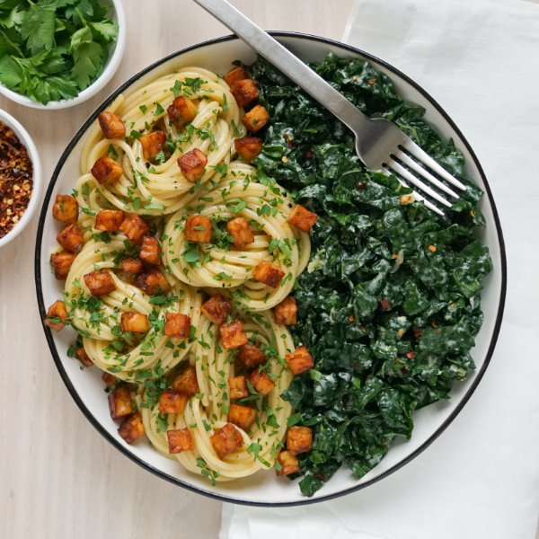

Spaghetti "Carbonara" with Tempeh, Parsley & Lemony Kale Salad

Total Time
30 min
Nutrition (per serving)
702.3 kcalCalories
42.5 gProtein
68.8 gCarbs
31 gFat
Full nutrition table
| Calories | 702.3 kcal |
| Total fat | 31 g |
| Saturated fat | 7.8 g |
| Trans fat | 0.1 g |
| Cholesterol | 91.5 mg |
| Sodium | 73.5 mg |
| Carbohydrates | 68.8 g |
| Fiber | 3.9 g |
| Sugars | 3 g |
| Protein | 42.5 g |
| Potassium | 976.7 mg |
| Calcium | 233.9 mg |
| Iron | 7.8 mg |
| Vitamin A | 380.7 IU |
| Vitamin C | 72.8 mg |
| Vitamin D | 20.7 IU |
Cookware
Ingredients
- 2eggs
- 1 small bunchItalian (flat-leaf) parsley
- 1 bunchkale
- 1lemon
- 2 ozParmesan cheese
- 10 ozspaghetti pasta
- 2 (8 oz) packagestempeh
- black pepper
- crushed red pepper
- extra virgin olive oil
- salt
- smoked paprika
- soy sauce
Steps
- Fill a large pot halfway with hot water (from the tap). Add salt, cover, and bring to a boil over high heat. Once boiling, uncover, add pasta, and stir for a few seconds; cook until desired firmness, 8-10 minutes. Drain pasta and set aside. (Reserve 1 cup pasta water before draining.)1 tsp salt
10 oz spaghetti pasta - Meanwhile, preheat a large skillet over medium-high heat.
- While the skillet heats up, small dice tempeh. Place in a medium bowl, drizzle with soy sauce, then season with smoked paprika and salt. Stir to coat.2 (8 oz) packages tempeh
4 tsp soy sauce
½ tsp smoked paprika
⅛ tsp salt - Once the skillet is hot, add oil and swirl to coat the bottom. Add tempeh and cook, stirring occasionally, until golden, 4-5 minutes. Transfer tempeh to a plate and set aside. (Reserve skillet for later use.)4 tsp extra virgin olive oil
- Meanwhile, finely grate Parmesan. Divide between two additional medium bowls.2 oz Parmesan cheese
- Wash and dry the fresh produce.1 small bunch Italian (flat-leaf) parsley
1 lemon
1 bunch kale - Shave parsley leaves off the stems; discard stems and mince the leaves. Add half to one of the bowls with the Parmesan. (Reserve remaining parsley for serving.)
- Add eggs, pepper, and salt to the bowl with the Parmesan and parsley. Whisk to combine the egg mixture and set aside.2 eggs
½ tsp black pepper
¼ tsp salt - Juice lemon into the remaining bowl with the Parmesan. Add oil, crushed red pepper, and salt. Whisk to combine the dressing.2 tbsp extra virgin olive oil
½ tsp crushed red pepper
½ tsp salt - Fold kale leaves in half lengthwise and slice off the stems; cut leaves crosswise into thin (shred-like) pieces. Add to the bowl with the dressing and, using your hands, massage kale until wilted, 1-2 minutes. Set aside.
- When the pasta is done, return skillet to medium-high heat. Add drained pasta and cook, tossing frequently, until warmed through, about 1 minute. Remove from heat.
- Carefully transfer warmed pasta to the bowl with the egg mixture. Tossing continuously, combine pasta with the egg mixture until pasta is glossy and evenly coated, 1-2 minutes. (The heat of the pasta will cook the egg.)
- Add tempeh to the bowl with the pasta and toss once more to combine. Add reserved pasta water, 1 tablespoon at a time, if necessary, to loosen the pasta.
- To serve, divide pasta and kale salad between plates or bowls. Top pasta with reserved parsley and enjoy!